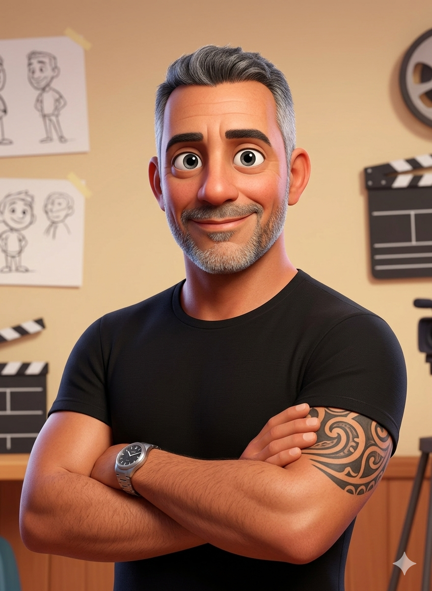

Staff Engineer · Authority Engine v21.0 · Sevilla

// Joaquín Ríos HerediaIngeniero de Software especializado en Java 21, arquitecturas distribuidas e integración de IA. Finalizando DAM en Junio 2026. Creador de Authority Engine v21.0 — pipeline híbrido que combina modelos de lenguaje locales con revisión académica automatizada.
Perfil con visión de negocio real — 25 años de experiencia en operaciones críticas antes de especializarme en software. Sé lo que cuesta que un sistema falle en producción.
Pipeline híbrido de generación de documentación técnica Staff Engineer. Combina modelos de lenguaje locales (Ollama/Qwen), investigación web en tiempo real y auditoría automática de calidad para producir documentación verificable en GitHub.
Disponible para consultoría TI de forma inmediata.
Empleo fijo desde Junio 2026.
100% Remoto · Presencial en Sevilla o Málaga.